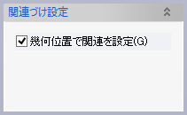

回転フィーチャー
回転フィーチャー
プロファイル形状を軸のまわりに回転したソリッドを作成します。


操作方法
パラメータの入力が整うと作成形状のプレビューと回転方向を示す矢印が表示されます。形状の確認後、OKボタンで実行します。
 矢印はマウスでドラッグして回転角度を変更することができます。
矢印はマウスでドラッグして回転角度を変更することができます。
パラメータ
- スケッチ

スケッチ（全体、レイヤー、カーブ）をプロファイルとして選択できます。 - 回転軸

回転軸となる直線をプロファイルのスケッチから選択します。 - 回転角度

回転角度（３６０°以下）を指定します。 - 厚みづけ（オプション）


プロファイルを厚みづけして回転します。
厚みづけの量と基準（内側、外側、両側、２方向）を指定します。オフセットを指定してプロファイルをオフセットした位置で厚みづけることもできます。 - 関連づけ設定（オプション）

回転形状の各面に対してスケッチなどを作成した際の関連づけ方法を設定します。
"幾何位置で関連を設定"を設定すると幾何位置に対して関連を設定します。
設定しない場合は回転方向や、厚みづけ方向に対して関連づけます。例)